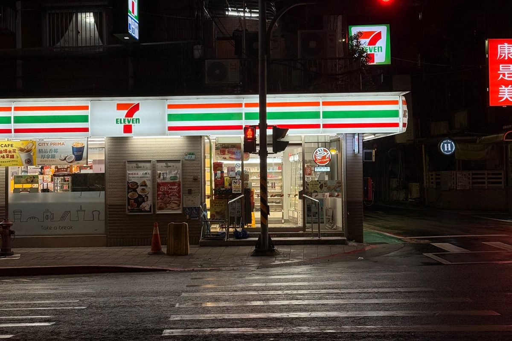
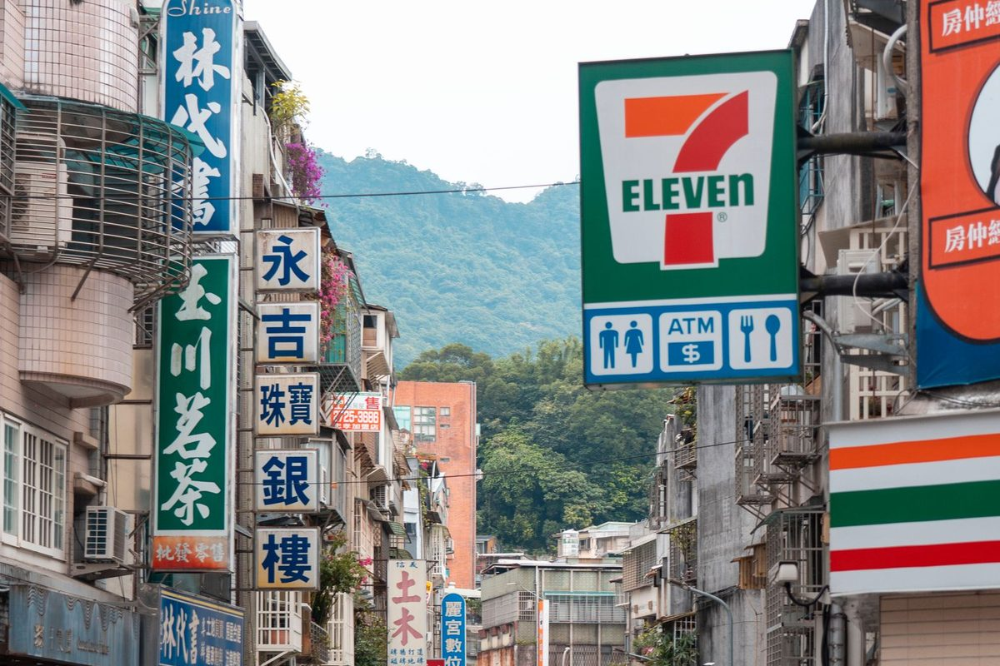

대만 세븐일레븐 셀프 전자레인지, QR코드로 어떻게 데울까?
버튼을 몇 번 눌러야 할지 고민할 필요 없이 라벨만 대면 시간이 맞춰져요.
게시
"계산했는데 직원이 전자레인지를 가리키기만 해요." 대만 세븐일레븐 전자레인지는 매장에 따라 손님이 직접 데우는 셀프(自助微波) 방식이에요. 새 기계는 도시락 라벨의 QR코드를 읽어 가열 시간을 자동으로 맞춰줘요. 세븐일레븐 발표 내용과 매장에 붙은 사용 안내를 바탕으로 정리해봤어요.
01 · 대만 세븐일레븐 전자레인지 사용 순서 한눈에 보기
| 순서 | 할 일 |
|---|---|
| 1 | 포장에 QR코드가 있는지 확인해요 |
| 2 | QR코드를 전자레인지의 스캔 영역에 대요 |
| 3 | '삐' 소리가 나면 시간이 입력된 거예요 |
| 4 | 음식을 가운데에 넣고 문을 닫은 뒤 시작 버튼을 눌러요 |
| 5 | 완료음이 울리면 매장 트레이로 꺼내요 |
매장에 붙은 '自助微波操作流程' 안내문 기준이에요(2026년 10월 기준).
02 · QR 전자레인지, 얼마나 있을까?
세븐일레븐은 2020년 미래형 매장 X-STORE 1호점에 스캔식 전자레인지를 처음 들였고, 당시 도시락·주먹밥·면·샐러드·조리빵 등 70종 이상이 QR코드 가열을 지원했어요. QR코드에는 제품별 출력과 시간, 나눠서 데우는 단계까지 담겨 있어요. 2024년부터 일반 매장에도 차례로 들어왔고, 2025년 1월 업체 발표 기준으로 전국 매장의 약 40%에 설치됐어요. 모든 매장, 모든 기계에 있는 건 아니에요.

03 · 이건 데우면 안 돼요
알루미늄·금속 알루미늄 포장과 금속 용기는 넣지 마세요.
컵라면 컵라면은 전자레인지에 넣으면 안 되는 품목이에요.
우유 우유는 입구를 연 뒤 데워요.
작동 중 돌아가는 동안 안을 들여다보지 말고, 꺼낼 땐 뜨거우니 매장 트레이를 쓰세요.
04 · 헷갈릴 땐 이렇게
QR이 없거나 안 읽히면 계산대 직원에게 포장을 보여주며 물어보세요.
말이 안 통하면 2025년 1월 발표 기준 세븐일레븐은 전 매장에 실시간 번역이 되는 태블릿을 두고 있고, 특정 상권 약 250개 매장에는 외국어 포스터·메뉴도 있어요.
패밀리마트도 비슷해요 패밀리마트 셀프 전자레인지 안내도 여러 언어로 나와 있어요.

"버튼을 찾지 말고 라벨부터 대보세요." — 매장 사용 안내를 바탕으로 정리한 한 줄 요약입니다.
편의점 도시락도 좋지만 하루쯤은 현지 아침을 먹어보세요. 타이베이 맛집 지도에서 타이베이 조식 맛집을 고르고, 여행자들이 많이 찾는 두유 가게 푸항또우장도 확인해보세요. 편의점에서 교통카드 잔액을 보는 법은 이지카드 잔액 조회 글에 정리했어요.
지도에서 타이베이 조식 맛집을 찾아보세요
편의점 대신 현지 아침을 먹기 좋은 타이베이 식당을 지도에서 확인해보세요.